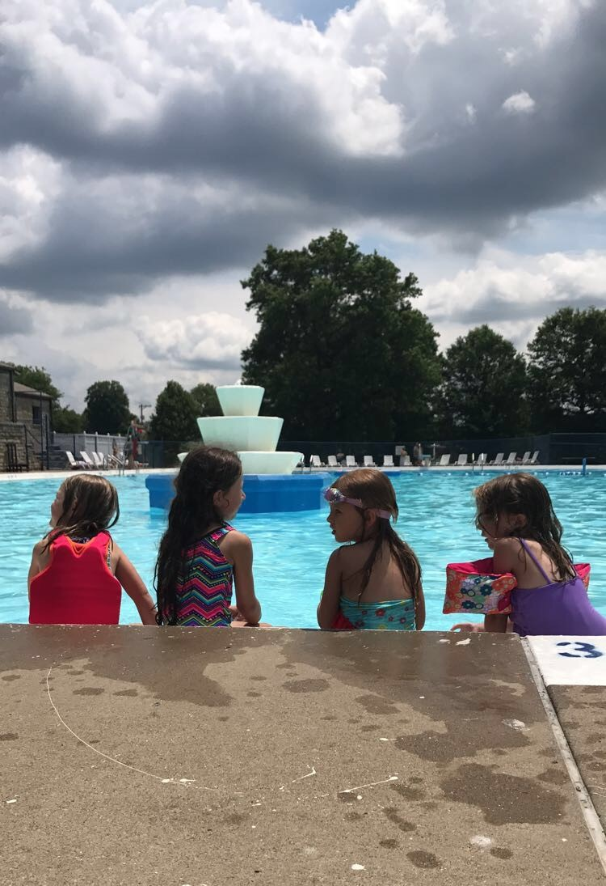
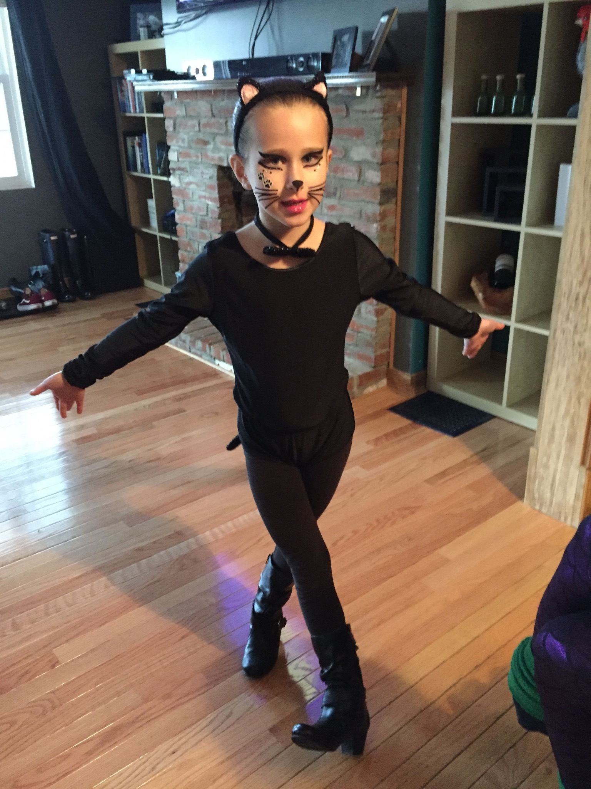
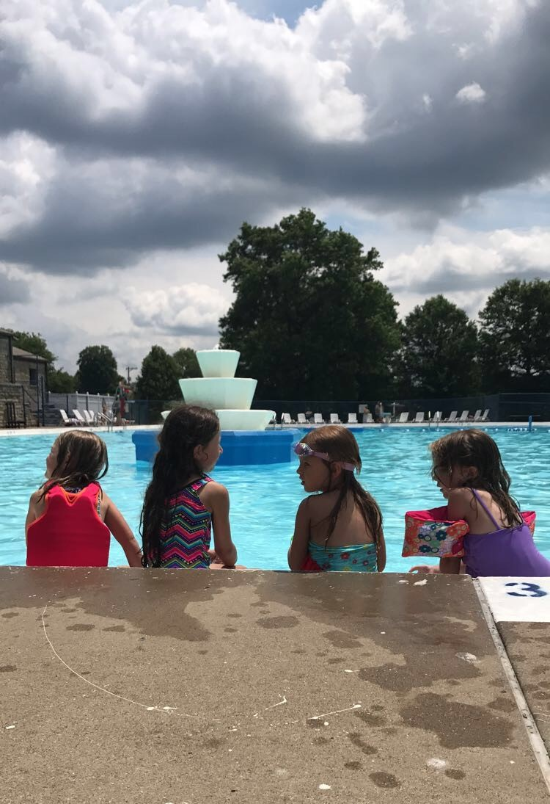
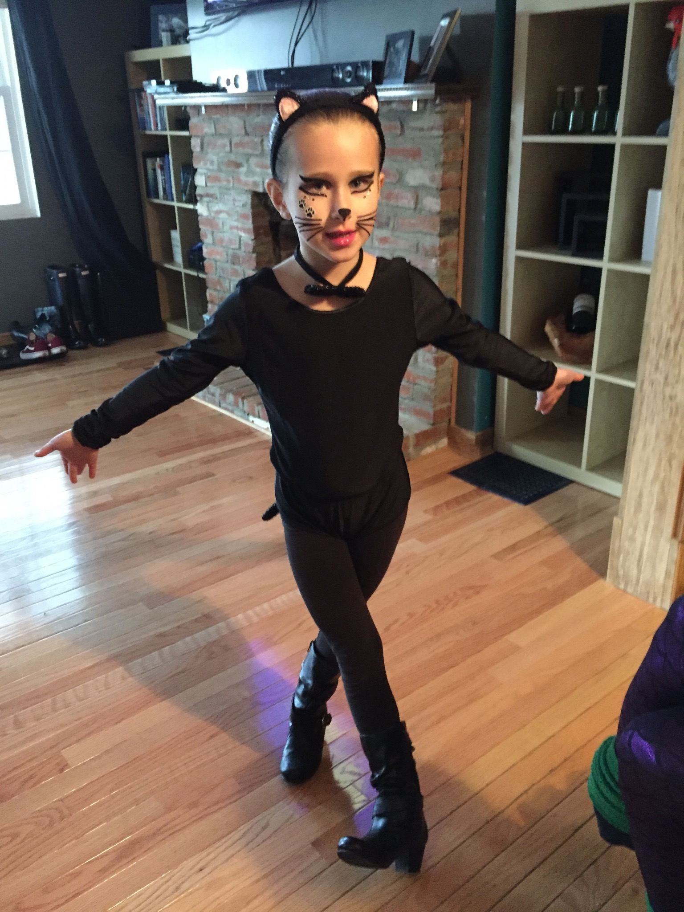

My Favorites
 



I could give a list of why a chocolate cake is the best creation ever, but that will just make everyone hungry. So, I will start with pizza as being one of my favorite foods. I took swimming classes this past summer and now know how to swim like a fish. I can’t wait for the My Little Pony movie to come out because Rainbow Dash is my favorite hero. The softest spot in my heart goes to, none other than, cats. Cats. Cats. Cats. I LOVE CATS! When I'm not at school, I like to draw. I am really good at drawing a lot of things like animals, people, and cupcakes. I like to sing and dance and make new friends. I love bedtime stories with mommy. But most of all, I love being a kid!
Also, check out my favorite website: